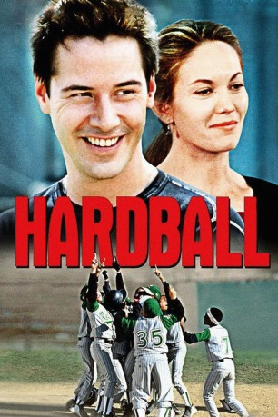
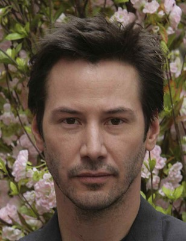
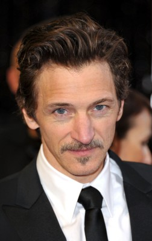
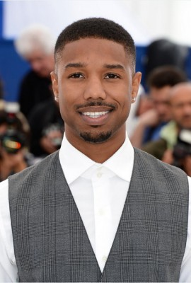
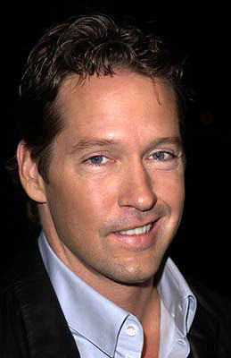

#5837 Hardball
 
 IMDB-Wertung: 6.4 / 10
IMDB-Wertung: 6.4 / 10  Tomatometer: 40
Tomatometer: 40  Metascore: 0
Metascore: 0 
Conor O'Neill lebt davon, mit Sporttickets zu dealen und sein Geld gleich wieder bei Sportwetten zu verprassen. Nachdem er so richtig Ärger mit den Gläubigern hat, bietet ihm sein Freund Jimmy an, ein Jugend-Baseball-Team zu trainieren. Er akzeptiert den Job. Die neun bis zwölf Jahre alten Kids leben in einem schwarzen Ghetto Chicagos, haben keine große Lust auf Baseball und verhalten sich ziemlich aufmüpfig. Natürlich ist Conor nicht gerade begeistert, nachmittags seine Zeit mit irgendwelchen Ghetto-Kids zu verbringen, doch es bleibt ihm keine andere Wahl, schnell Geld zu verdienen. Conor wendet sich zur Unterstützung an die attraktive Lehrerin der Jungen, Elizabeth Wilkes. Es kommt, wie es kommen muss: sein seltsames Team wächst Conor ans Herz...
Jahr: 2001
Dauer: 106 Minuten
FSK: 12
Land: USA Studio: Paramount PicturesTonspuren:
Untertitel: Deutsch, Englisch,
Auflösung: 1080p (1920x1080) Größe: 7137 MB
Genre: Drama, Sport
Regisseur: Brian Robbins
Drehbuch: Greengrass Productions
Soundtrack:
Darsteller:
-  Keanu Reeves als Conor O'Neill
 Diane Lane als Elizabeth Wilkes
Diane Lane als Elizabeth Wilkes-  John Hawkes als Ticky Tobin
-  Michael B. Jordan als Jamal
- DeWayne Warren als Jarius 'G-Baby' Evans
-  D.B. Sweeney als Matt Hyland
- Mark Robert Ellis als Baseball Coach
- Graham Beckel als Duffy
- Michael McGlone als Jimmy Fleming
- Kwame Amoaku als Pizza Guy
 Mark Margolis als Fink
Mark Margolis als Fink- Michael B. Chait als Straight-Laced Kid
- John Anton als Baseball Fan , uncredited
- Christopher Kurzer als (uncredited
- Glenn Lutz als Baseball Player , uncredited
- Michael Mili als Ticket Taker , uncredited
- Joe Wachowski als Spectator , uncredited
- Toussaint Waterman als Pallbearer , uncredited
- Bryan Hearne als Andre Ray Peetes
- Julian Griffith als Jefferson Albert Tibbs
- A. Delon Ellis Jr. als Miles Pennfield II
- Kristopher Lofton als Clarence
- Michael Perkins als Kofi Evans
- Brian M. Reed als Raymond 'Ray Ray' Bennet
- Carol Hall als Pearla Evans
- Jacqueline Williams als Lenora Tibbs
- Freeman Coffey als Darryl Mackey
- Andre Morgan als Umpire
- Reginald McKinley als Umpire
- Paul Turner als Bartender
- Dawn Lewis als Ellen
- Vince Green als Other Pizza Guy
- Tom Milanovich als Ed
- Greg Sandquist als Barber's Son
- Stephen Cinabro als Gino
- Donald M. Siple als Priest
- Adam Tomei als Barfly
- Sammy Sosa als Himself
- Ronnel Taylor als Gang Member
- Sterling Brim als Sterling
- Aaron Evans als Aaron
- Alexander Telles als Alex
- Josefus Duanah als Tough Kid
- Jeffery Gatlin als Tough Kid
- Stephen Michael Abbott als Waatas Coach
- James Currie als Check Cashing Station Cashier / Pedestrian , uncredited
- Dave Daniels als Baseball Fan , uncredited
- Stephen Detherage als Drug Dealer , uncredited
- Richard Ferrando als Spectator , uncredited
- Joe Johnson als Spectator , uncredited
Datei: X:\2001\Hardball (2001, FSK12, 1920x1080).mkv seit 27.03.2017
Festplatte: HD 1996-2002
 Es gibt insgesamt 102 Filme in der Gruppe '2001'
Es gibt insgesamt 102 Filme in der Gruppe '2001'